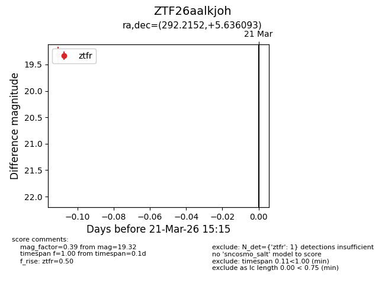
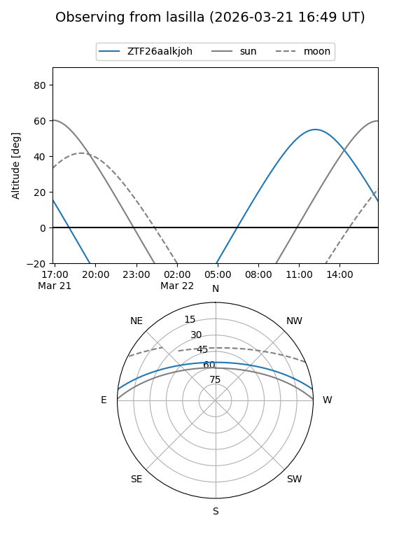
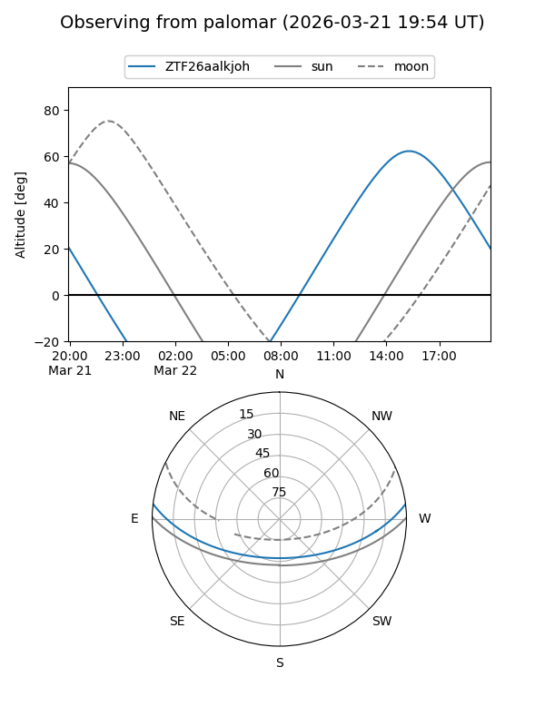

ZTF26aalkjoh
Target ZTF26aalkjoh at 2026-03-21 15:17
Aliases and brokers:
FINK: link
Lasair: link
ALeRCE: link
alt names
ZTF26aalkjoh (ztf,fink_ztf)
Coordinates:
equatorial (ra, dec) = 292.2152,+5.63609
equatorial (HMS+DMS) = 19:28:51.66,+05:38:09.93
galactic (l, b) = (42.2533,-5.69303)
Flags:
Photometry:
last ztfr=19.32
1 ztfr detections
Lightcurve

Visibility


Additional plots